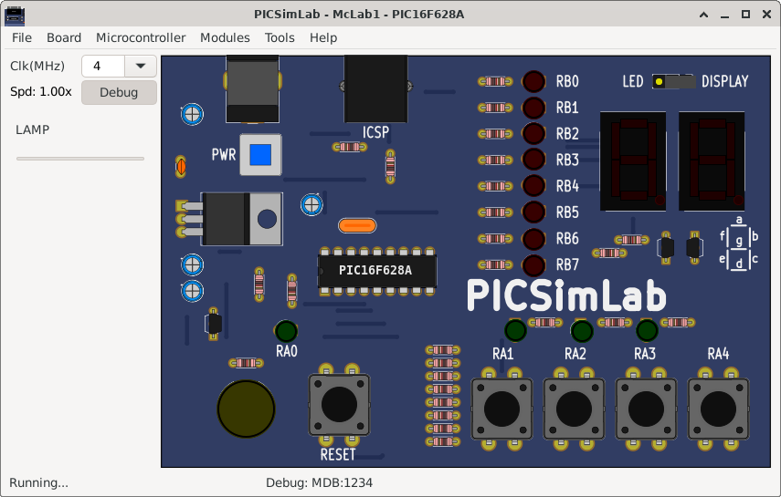
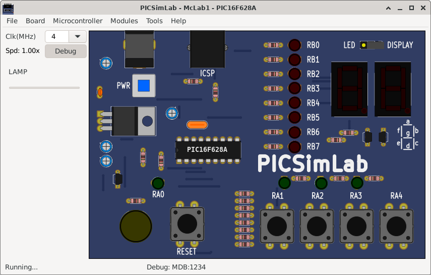

12.3.1 Starting PICsimLab

The plugin connect to Picsimlab through a TCP socket using port 1234, and you have to allow the access in the firewall. Verify in the PICsimLab statusbar the message “MplabxD: Ok”. It’s show debugger server state.

The plugin connect to Picsimlab through a TCP socket using port 1234, and you have to allow the access in the firewall. Verify in the PICsimLab statusbar the message “MplabxD: Ok”. It’s show debugger server state.